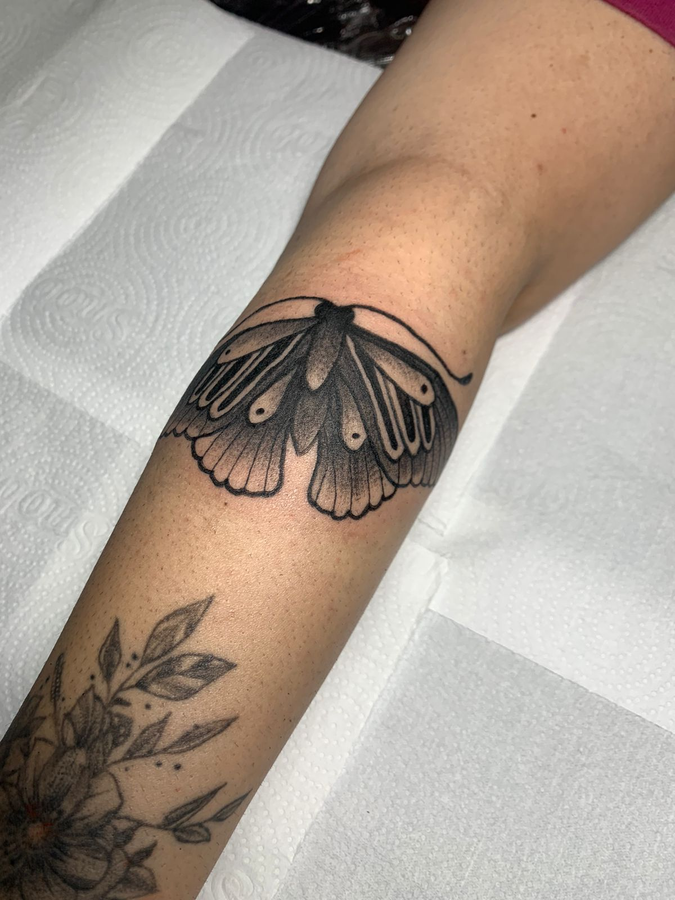
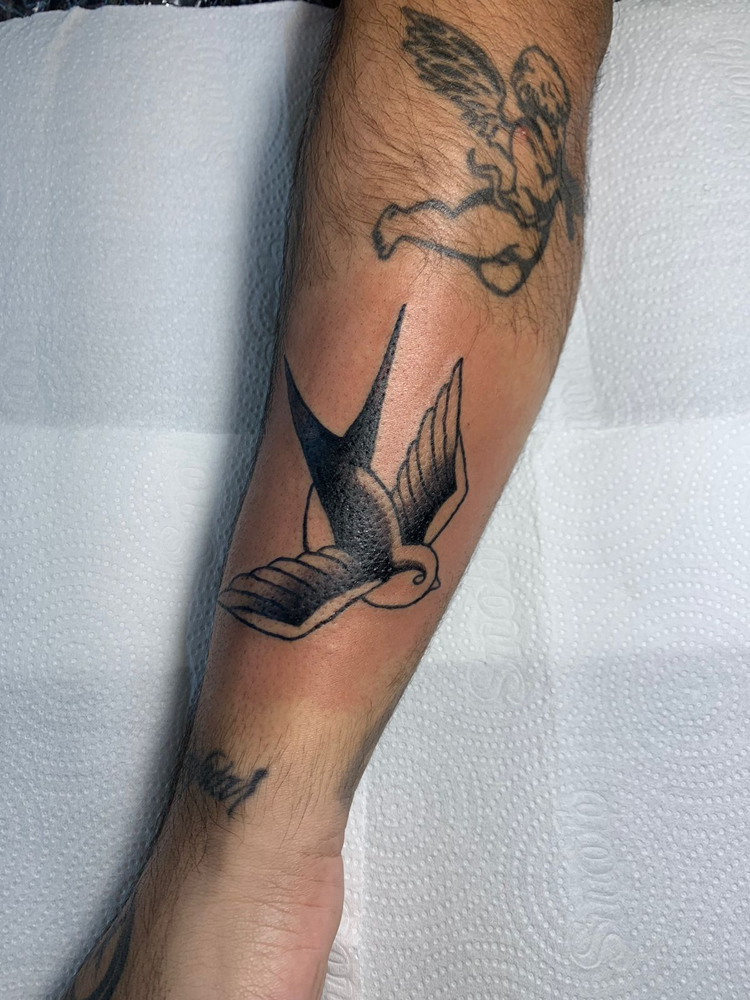
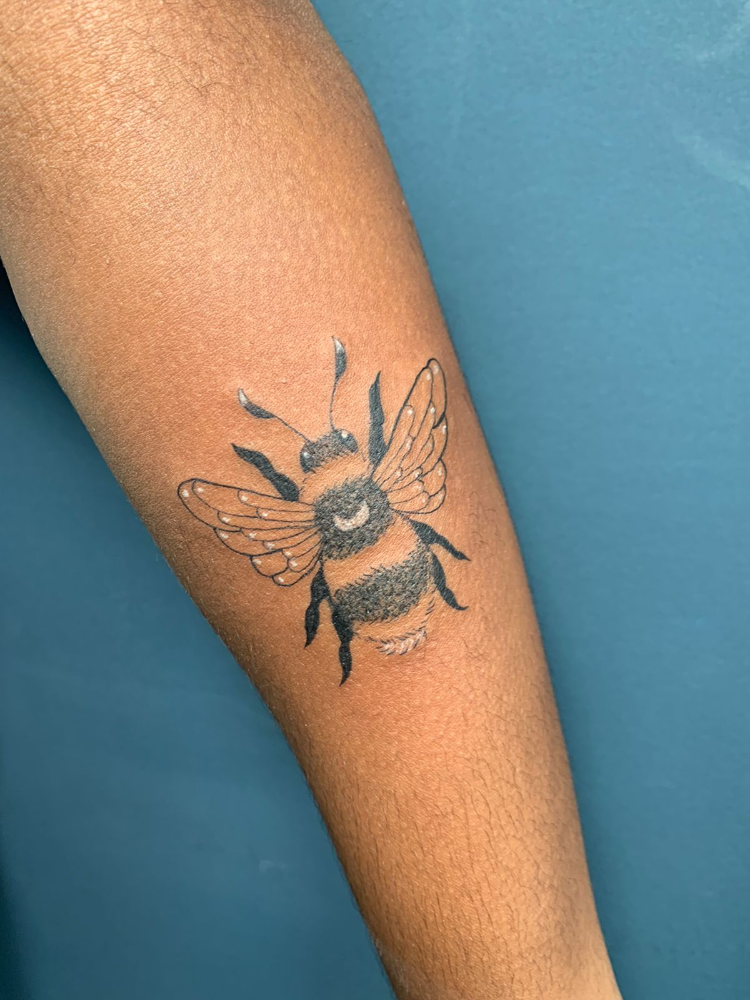

Estilos
blackwork
o Blackwork, em tradução, quer dizer trabalho em preto. Esse estilo de tatuagem não é nada de novo no mundo da tatuagem. Antigamente, como existiam poucas alternativas do uso de tintas coloridas, a maioria das tatuagens era feitas com a tinta preta.
oldschool
O estilo old school é conhecido como velha escola, que tem como referência ao estilo de tatuagem americano ocidental ou tradicional, com contornos em negrito e uma paleta de cores limitada como amarelo, vermelho, verde e preto, mas você irá perceber que ele se modernizou e hoje é possível ver outros tons e até novas texturas nos novos projetos de old school.
fine line
As tatuagens de fine line ou simplesmente traço fino, é um dos estilos mais populares e procurados nos estúdios. O estilo consiste em traços finos e geralmente são aplicados em desenhos e minimalistas. Foi a partir do avanço dos materiais de tatuagem, que se tornou possível fazer linhas cada vez mais precisas e finas